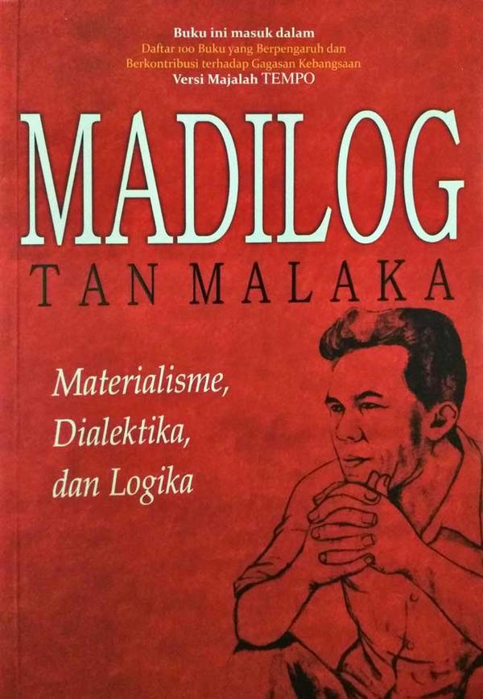
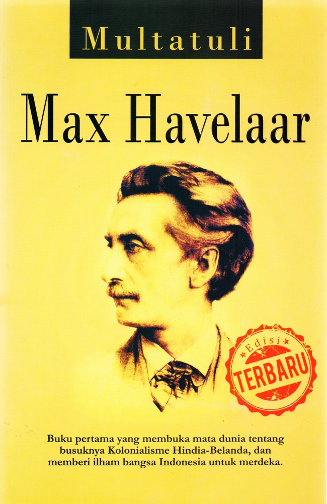
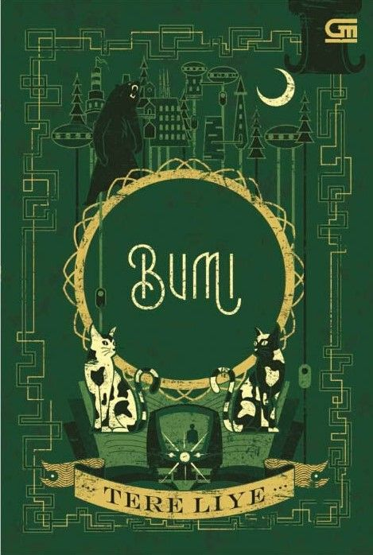
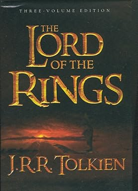

Madilog
Penulis: Tan Malaka
Penerbit: Narasi
Tahun: 1951
"Idealisme adalah kemewahan terakhir yang hanya dimiliki oleh pemuda."

Max Havelaar
Penulis: Eduard Douwes Dekker
Penerbit: Djambatan
Tahun: 1972
"Semuanya ada tapi tidak berarti apa-apa."

Bumi Manusia
Penulis: Pramoedya Ananta Toer
Penerbit: Hasta Mitra
Tahun: 1980
"Berterimakasihlah pada segala yang memberi kehidupan."

Bumi
Penulis: Tere Liye
Penerbit: Gramedia
Tahun: 2014
"Petualangan dimulai ketika kita berani mencoba."

The Lord of the Rings
Penulis: J. R. R. Tolkien
Penerbit: Harper
Tahun: 1954–1955
"Even the smallest person can change the course of the future."